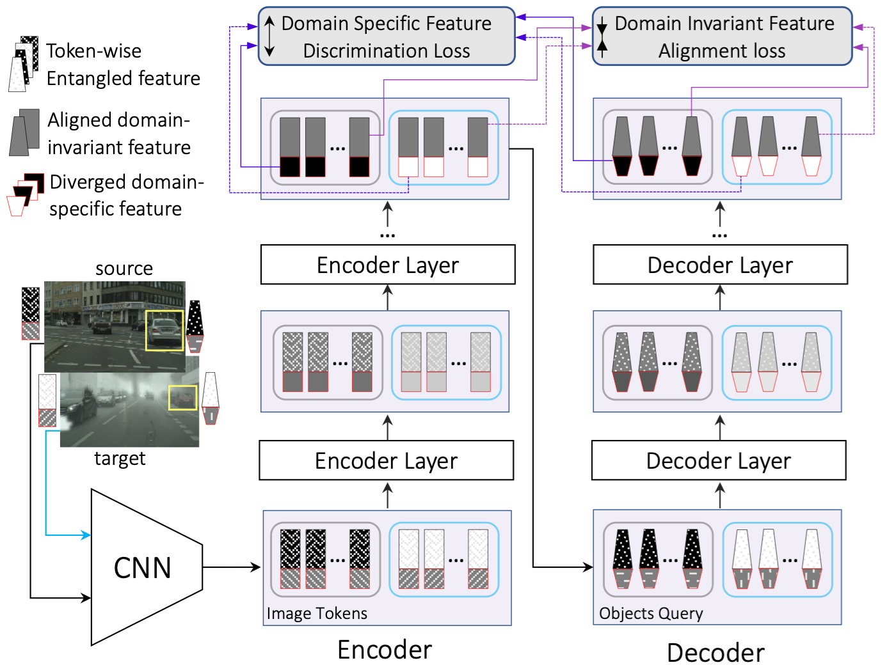
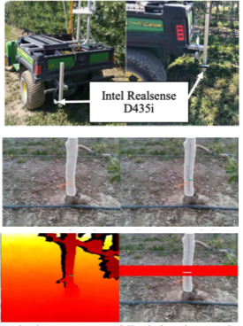
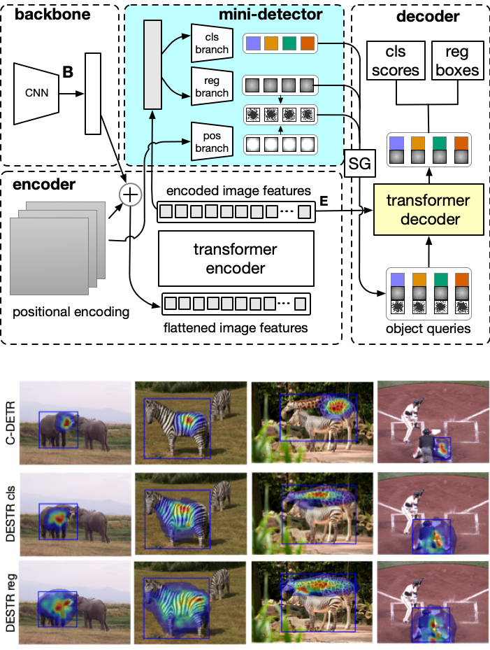

Hi, I recently completed my PhD final exam in Computer Science at the School of Electrical Engineering and Computer Science, Oregon State University.
I was advised by Prof. Sinisa Todorovic.
My research primarily focused on Computer Vision, exploring areas such as Object Detection, Image and Video Semantic/Instance Segmentation, Object Tracking, and Cross-domain Learning. I am now seeking full-time opportunities where I can apply my expertise to real-world challenges.
For more details about my work and to view my CV, please visit the rest of my site.
For more details about my work and to view my CV, please visit the rest of my site.
News
Publications
-
Rebecca Hutchinson, Liqiang He , Sarah Emerson. "Species distribution modeling of citizen science data as a classification problem with class-conditional noise.", Proceedings of the AAAI Conference on Artificial Intelligence 31. [PDF]
Bidirectional Alignment for Domain Adaptive Detection with Transformers (ICCV 23)
Liqiang He, Wei Wang, Albert Chen, Min Sun, Cheng-hao Kuo, Sinisa Todorovic
[PDF] [Code] [Poster]

We propose a Bidirectional Alignment for domain adaptive Detection with Transformers (BiADT) to improve cross domain object detection performance. Existing adversarial learning based methods use gradient reverse layer (GRL) to reduce the domain gap between the source and target domains in feature representations. Since different image parts and objects may exhibit various degrees of domain-specific characteristics, directly applying GRL on a global image or object representation may not be suitable. Our proposed BiADT explicitly estimates token-wise domain-invariant and domain-specific features in the image and ob- ject token sequences. BiADT has a novel deformable attention and self-attention, aimed at bi-directional domain alignment and mutual information minimization. These two objectives reduce the domain gap in domain-invariant representations, and simultaneously increase the distinctive- ness of domain-specific features. Our experiments show that BiADT achieves very competitive performance to SOTA consistently on Cityscapes-to-FoggyCityscapes, Sim10K-to-Citiscapes and Cityscapes-to-BDD100K, outperforming the strong baseline, AQT, by 1.9, 2.1, and 2.4 in mAP50, respectively.
Automatic estimation of trunk cross sectional area using deep learning (ECPA 23)
T Wang, P Sankari, J Brown, A Paudel, L He, M Karkee, A Thompson, C Grimm, JR Davidson, S Todorovic
[PDF] [Code] [Poster]

This paper presents an automated method for estimating the trunk cross sectional area of fruit trees. An Intel RealSense 435i was used to capture RGB images and point clouds of individual trunks. To segment the trunk in the image from the background, a Maskedattention Mask Transformer model was adopted. The segmentation results were integrated with the 3D point cloud to estimate trunk widths in 3D. The width estimation was evaluated on three diverse datasets collected from a commercial apple orchard using human measurements as ground truth. With a mean absolute error less than 5%, the method is sufficiently accurate to assist orchard operations.
DESTR: Object Detection with Split Transformer (CVPR 22)
Liqiang He, Sinisa Todorovic
[PDF] [Code] [Poster]

Self- and cross-attention in Transformers provide for high model capacity, making them viable models for object detection. However, Transformers still lag in performance behind CNN-based detectors. This is, we believe, because: (a) Cross-attention is used for both classification and bounding-box regression tasks; (b) Transformer's decoder poorly initializes content queries; and (c) Self-attention poorly accounts for certain prior knowledge which could help improve inductive bias. These limitations are addressed with the corresponding three contributions. First, we propose a new Detection Split Transformer (DESTR) that separates estimation of cross-attention into two independent branches -- one tailored for classification and the other for box regression. Second, we use a mini-detector to initialize the content queries in the decoder with classification and regression embeddings of the respective heads in the mini-detector. Third, we augment self-attention in the decoder to additionally account for pairs of adjacent object queries. Our experiments on the MS-COCO dataset show that DESTR outperforms DETR and its successors.
A polar-edge context-aware (PECA) network for mirror segmentation (Image and Vision Computing, 22)
Liqiang He, Lu Xia, Jiajia Luo, Ke Zhang, Yuyin Sun, Nan Qiao, Cheng-Hao Kuo, Sinisa Todorovic
[PDF]